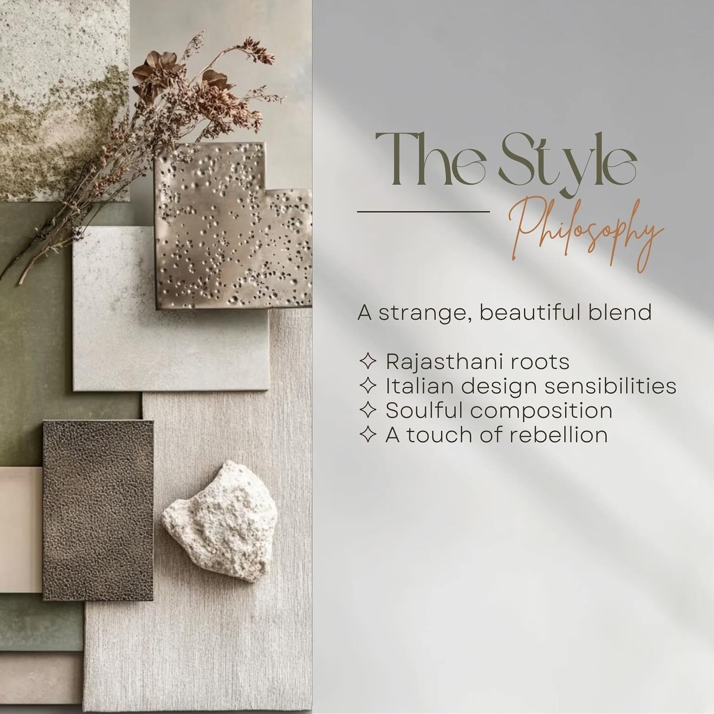
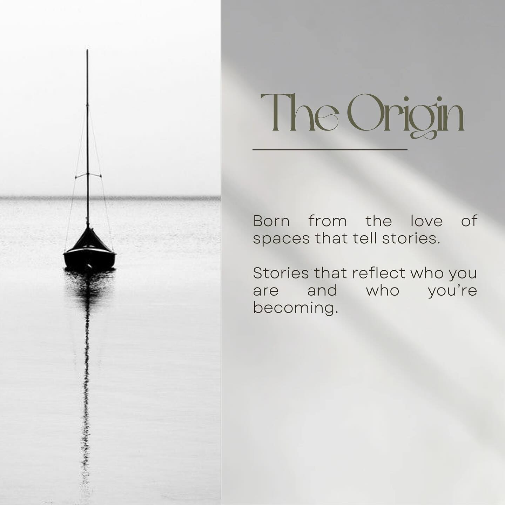

"Baeroh was created from a simple belief: every meaningful environment begins with understanding people."
We believe the environments we inhabit quietly shape the way we live, work, gather and grow. Our role is to understand the people behind them, then thoughtfully translate their stories into environments where they quietly say, “This feels like us.”

Baeroh is a lifelong study of how people live, and how thoughtful design can quietly make life better.
Our PracticeEvery project begins with a conversation. We listen before we draw. We question before we decide. We guide before we recommend.
Whether we're designing a new home, transforming an existing one, planning a workplace or delivering a complete turnkey project, our role remains the same—to help people make thoughtful decisions about the environments they inhabit.
Because at the end of the day, we simply wanted to build—a brand that really cared.
Every meaningful environment begins with understanding people.
Our signature is not a style. Our signature is our process.
Trust is our only non-negotiable.
"Design, for me, is love. A beautiful relationship you build with your surroundings."
We will leave every person feeling more understood than when they first walked in.
Our greatest measure of success is hearing someone quietly say, “This feels like us.”
"Baero" (Rajasthani dialect) = to know. The deeper sense of "I know the way, don't worry, we're here now." Tagline reference: "Baero Hai."
To know people before plans.
To know what truly matters before making decisions.
To know that every environment is shaped as much by the lives within it as the walls around it.
A reflection of our design sensibility, blending Rajasthani heritage, Italian structure, and material stillness.



